Archived from https://takeuforward.org/data-structure/reverse-a-doubly-linked-list/
Problem Statement: Given a doubly linked list of size ‘N’ consisting of positive integers, your task is to reverse it and return the head of the modified doubly linked list.
Examples
Input : DLL - 1 <-> 2 <-> 3 <-> 4
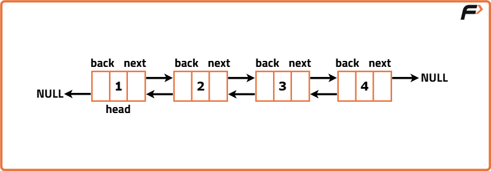
Output: DLL - 4 <-> 3 <-> 2 <-> 1
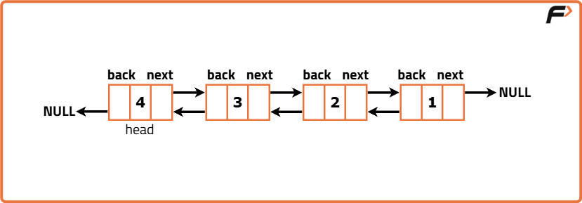
Explanation: The doubly linked list is reversed and its last node is returned at the new head pointer.
Input: DLL-10 <-> 20 <-> 30
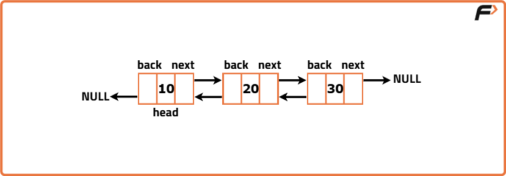
Output: DLL - 30 <-> 20 <-> 10
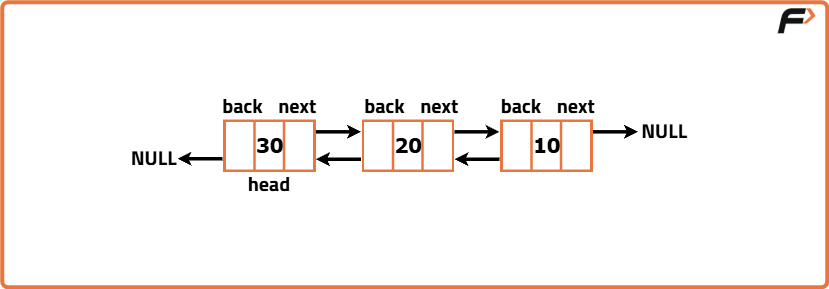
Explanation: In this case, the doubly linked list is reversed and its former tail is returned as its new head.
Disclaimer: Don’t jump directly to the solution, try it out yourself first.
Brute Force Approach
Algorithm
A brute-force approach involves replacing data in a doubly linked list. First, we traverse the list and store node data in a stack. Then, in a second pass, we assign elements from the stack to nodes, ensuring a reverse order replacement since stacks follow the Last-In-First-Out (LIFO) principle.
Initialization a temp pointer to the head of the doubly linked list and a stack data structure to store the values from the list.
Traverse the doubly linked list with the temp pointer and while traversing push the valueat the currentnodetemp onto the stack. Move the temp to the nextnode continuing until temp reaches null indicating the end of the list.
Reset the temp pointer back to the head of the list and in this second iteration pop the element from the stack, replace the data at the current node with the popped value from the top of the stack and move temp to the next node. Repeat this step until temp reaches null or the stack becomes empty.
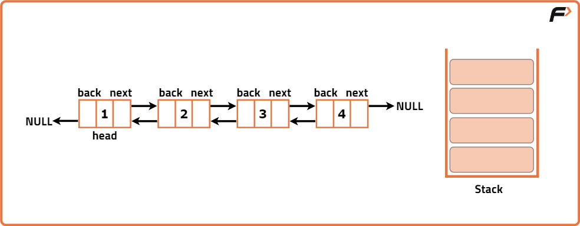
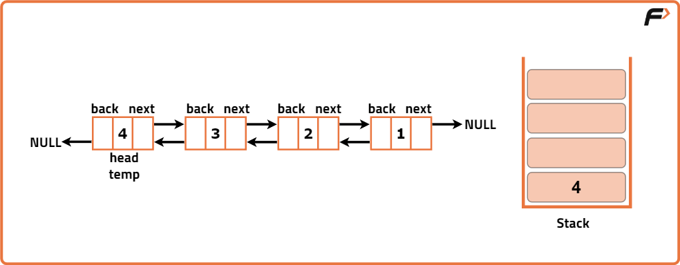
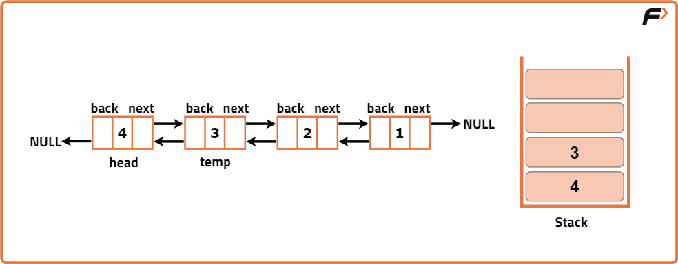
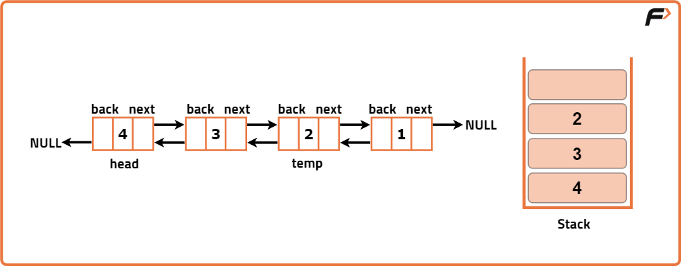
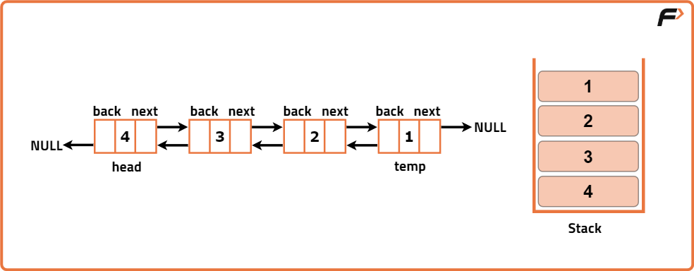
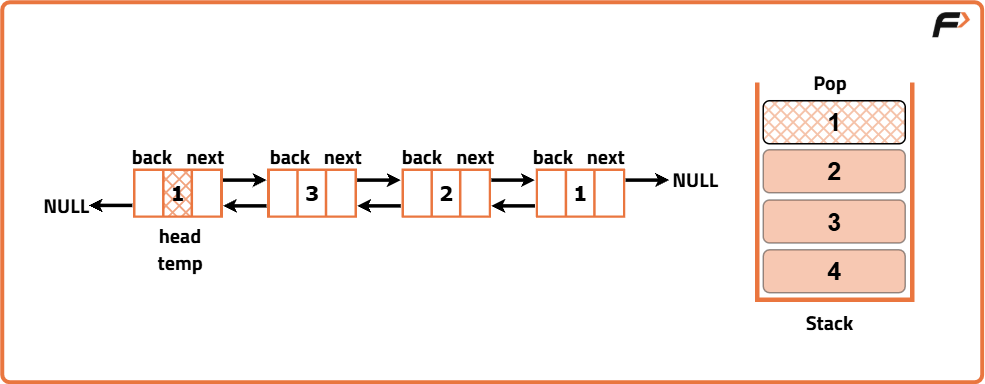
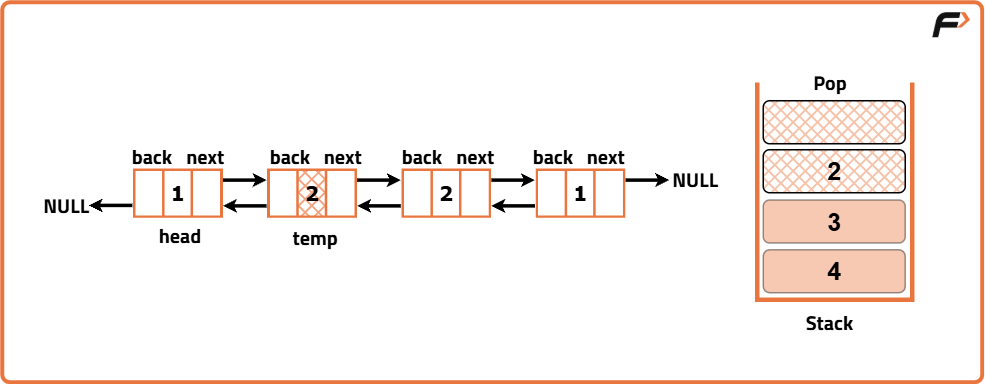
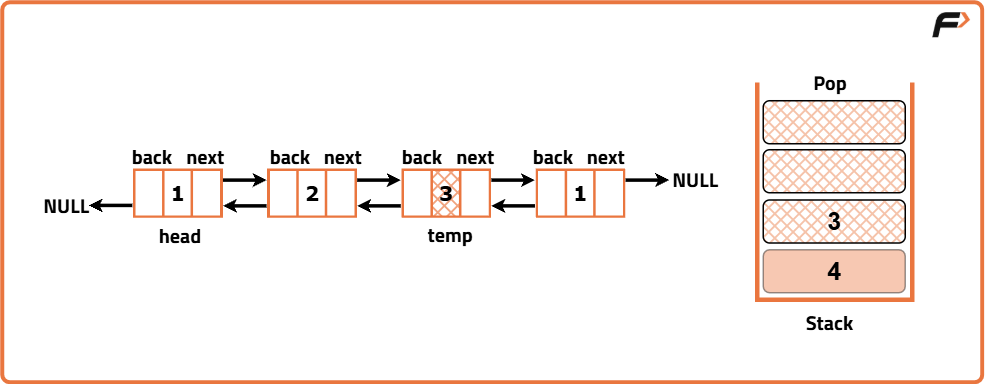
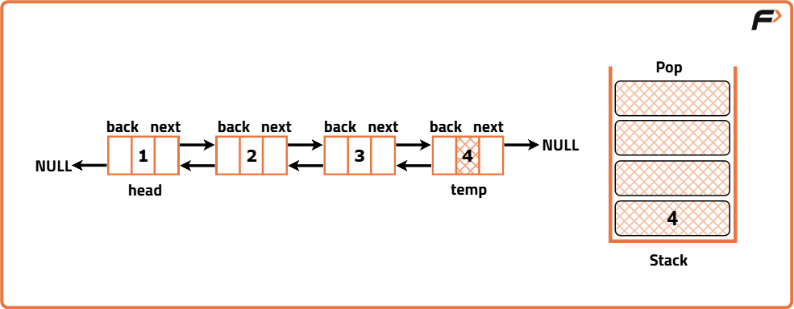
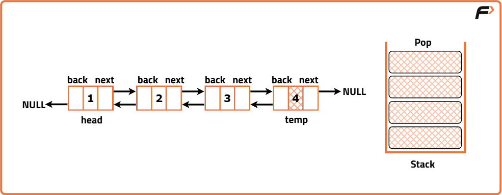
Code
#include <bits/stdc++.h>
using namespace std;
// Class representing a Node in a doubly linked list
class Node {
public:
// Data stored in the node
int data;
// Pointer to the next node
Node* next;
// Pointer to the previous node
Node* back;
// Constructor with data, next, and back references
Node(int data1, Node* next1, Node* back1) {
data = data1;
next = next1;
back = back1;
}
// Constructor with only data, next and back are null
Node(int data1) {
data = data1;
next = nullptr;
back = nullptr;
}
};
// Function to convert a vector into a doubly linked list
Node* convertArr2DLL(vector<int> arr) {
// Create head node using the first array element
Node* head = new Node(arr[0]);
// Initialize previous node as head
Node* prev = head;
// Iterate through the remaining elements
for (int i = 1; i < arr.size(); i++) {
// Create new node with current value and back link to prev
Node* temp = new Node(arr[i], nullptr, prev);
// Set the next pointer of previous node to new node
prev->next = temp;
// Move prev to the new node
prev = temp;
}
// Return the head of the DLL
return head;
}
// Function to print elements of a doubly linked list
void print(Node* head) {
// Traverse till the end of the list
while (head != nullptr) {
// Print current node's data
cout << head->data << " ";
// Move to the next node
head = head->next;
}
}
// Function to reverse a doubly linked list using a stack (brute force)
Node* reverseDLL(Node* head) {
// If list is empty or has only one node, return as-is
if (head == nullptr || head->next == nullptr) {
return head;
}
// Stack to store node data
stack<int> st;
// Pointer to traverse the list
Node* temp = head;
// Push all node values to stack
while (temp != nullptr) {
st.push(temp->data);
temp = temp->next;
}
// Reset temp to head for second pass
temp = head;
// Replace node values with those from stack
while (temp != nullptr) {
temp->data = st.top();
st.pop();
temp = temp->next;
}
// Return head of reversed list
return head;
}
// Driver code
int main() {
// Input array
vector<int> arr = {12, 5, 8, 7, 4};
// Convert array to doubly linked list
Node* head = convertArr2DLL(arr);
// Print original DLL
cout << endl << "Doubly Linked List Initially: " << endl;
print(head);
// Reverse the DLL
head = reverseDLL(head);
// Print reversed DLL
cout << endl << "Doubly Linked List After Reversing: " << endl;
print(head);
return 0;
}
import java.util.*;
class Node {
int data;
Node next;
Node back;
// Constructor with data, next, and back
Node(int data1, Node next1, Node back1) {
data = data1;
next = next1;
back = back1;
}
// Constructor with only data
Node(int data1) {
data = data1;
next = null;
back = null;
}
}
// Solution class with DLL methods
class Solution {
// Function to convert array to doubly linked list
public Node convertArr2DLL(int[] arr) {
// Create the head node
Node head = new Node(arr[0]);
// Initialize previous pointer
Node prev = head;
// Traverse remaining array elements
for (int i = 1; i < arr.length; i++) {
// Create a new node and link back to previous
Node temp = new Node(arr[i], null, prev);
prev.next = temp;
prev = temp;
}
// Return the head of DLL
return head;
}
// Function to print the doubly linked list
public void print(Node head) {
// Traverse the list and print data
while (head != null) {
System.out.print(head.data + " ");
head = head.next;
}
}
// Function to reverse the DLL using stack
public Node reverseDLL(Node head) {
// If list is empty or has one element, return it
if (head == null || head.next == null) {
return head;
}
// Stack to store node values
Stack<Integer> st = new Stack<>();
// Pointer to traverse list
Node temp = head;
// Push all node data to stack
while (temp != null) {
st.push(temp.data);
temp = temp.next;
}
// Reset temp to head
temp = head;
// Replace node values from stack
while (temp != null) {
temp.data = st.pop();
temp = temp.next;
}
// Return updated head
return head;
}
}
// Main class to run the program
public class Main {
public static void main(String[] args) {
Solution sol = new Solution();
// Input array
int[] arr = {12, 5, 8, 7, 4};
// Convert to DLL
Node head = sol.convertArr2DLL(arr);
System.out.println("Doubly Linked List Initially:");
sol.print(head);
// Reverse DLL
head = sol.reverseDLL(head);
System.out.println("\nDoubly Linked List After Reversing:");
sol.print(head);
}
}
class Node:
def __init__(self, data, next=None, back=None):
self.data = data
self.next = next
self.back = back
# Function to convert a list to a doubly linked list
def convertArr2DLL(arr):
# Create head node
head = Node(arr[0])
# Pointer to track previous node
prev = head
# Traverse remaining elements
for i in range(1, len(arr)):
# Create new node with back reference to prev
temp = Node(arr[i], None, prev)
prev.next = temp
prev = temp
# Return head of DLL
return head
# Function to print the doubly linked list
def printDLL(head):
# Traverse and print each node's data
while head:
print(head.data, end=" ")
head = head.next
# Function to reverse the DLL using stack
def reverseDLL(head):
# If list is empty or has one node, return as is
if not head or not head.next:
return head
# Stack to hold node data
stack = []
# Pointer to traverse list
temp = head
# Push all node values to stack
while temp:
stack.append(temp.data)
temp = temp.next
# Reset temp to head
temp = head
# Replace node data with values from stack
while temp:
temp.data = stack.pop()
temp = temp.next
# Return reversed head
return head
# Driver code
arr = [12, 5, 8, 7, 4]
head = convertArr2DLL(arr)
print("Doubly Linked List Initially:")
printDLL(head)
head = reverseDLL(head)
print("\nDoubly Linked List After Reversing:")
printDLL(head)
class Node {
constructor(data, next = null, back = null) {
this.data = data;
this.next = next;
this.back = back;
}
}
// Function to convert array to doubly linked list
function convertArr2DLL(arr) {
// Create the head node
let head = new Node(arr[0]);
// Pointer to previous node
let prev = head;
// Loop through remaining elements
for (let i = 1; i < arr.length; i++) {
// Create new node with back pointer
let temp = new Node(arr[i], null, prev);
prev.next = temp;
prev = temp;
}
// Return head of DLL
return head;
}
// Function to print the DLL
function printDLL(head) {
// Traverse and print each node's data
while (head !== null) {
process.stdout.write(head.data + " ");
head = head.next;
}
}
// Function to reverse DLL using stack
function reverseDLL(head) {
// If list is empty or has one element, return as is
if (head === null || head.next === null) {
return head;
}
// Stack to store node data
let stack = [];
// Traverse and push all node data
let temp = head;
while (temp !== null) {
stack.push(temp.data);
temp = temp.next;
}
// Reset temp to head
temp = head;
// Replace node data from stack
while (temp !== null) {
temp.data = stack.pop();
temp = temp.next;
}
// Return head of reversed DLL
return head;
}
// Driver code
let arr = [12, 5, 8, 7, 4];
let head = convertArr2DLL(arr);
console.log("Doubly Linked List Initially:");
printDLL(head);
head = reverseDLL(head);
console.log("\nDoubly Linked List After Reversing:");
printDLL(head);
Complexity Analysis
Time Complexity : O(2N), During the first traversal, each node's value is pushed into the stack once, which requires O(N) time. Then, during the second iteration, the values are popped from the stack and used to update the nodes.
Space Complexity : O(N), This is because we are using an external stack data structure. At the end of the first iteration, the stack will hold all N values of the doubly linked list therefore the space required for stack is directly proportional to the size of the input doubly linked list.
Optimal Approach
Algorithm
Instead of performing two separate traversals of the linked list and storing its node values in an external data structure, we can optimize our approach by directly modifying the links between the nodes within the doubly linked list
We need to traverse on every node, and for every node change the next pointer and back pointer. If we can do this for all nodes, at the end of traversal, the doubly linked list will be reversed.
Initialise two pointers that are needed for the reversal. Initialize a current pointer to the head of the linked list. This pointer will traverse the list as we reverse it. Initialize a second pointer last to null. This pointer will be used for temporary storage during pointer swapping, as we need a third variable while swapping two data.
Traverse through the DLL by looping over all the nodes.
While iterating over all nodes in the linked list, we make changes to set the backward pointer of a node to the next changing its previouslink. Along with this, the forward pointer is adjusted to point to the previous node, reversing the nextlink. To prevent losing the last node in this process, we use a reference to the lastnode to retain it.
Update the currentnode'sback pointer to point to the nextnode (current->back = current->next). This step reverses the direction of the backward pointer.
Update the currentnode'snext pointer to point to the previousnode (current->next = last). This step reverses the direction of the forward pointer.
Move the current pointer one step forward (current = current->back). This allows us to continue the reversal process.
After completing the traversal, the last node ends up at the secondnode in the reversed doubly linked list. To obtain the newhead of the reversed list, we simply use the backwardpointer of the lastnode, which points to the newhead.
To ensure that we handle the case where the traversal ended at the original list's end (i.e., the last pointer is not null), we update the headpointer to point to the newhead of the reversed list, which is stored in the lastpointer.
Finally, we return the headpointer, now pointing to the head of the fully reversed doubly linked list.
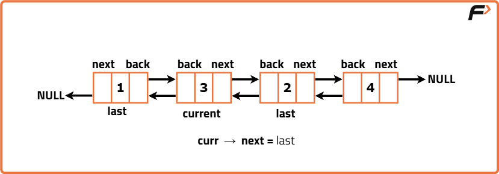
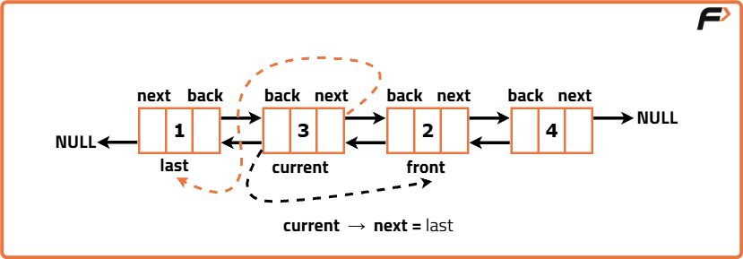
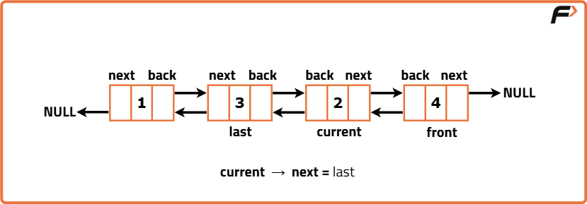
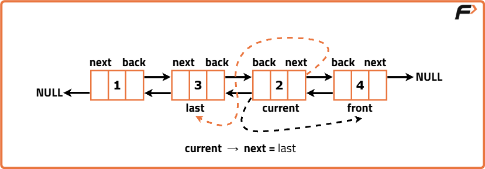
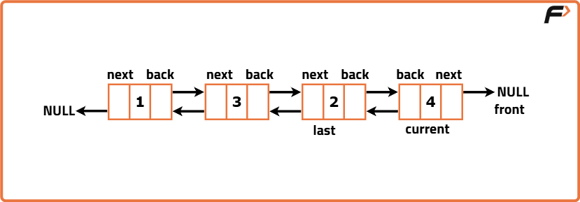
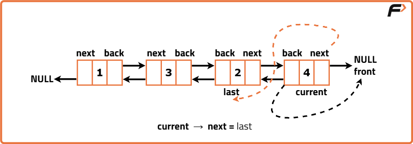
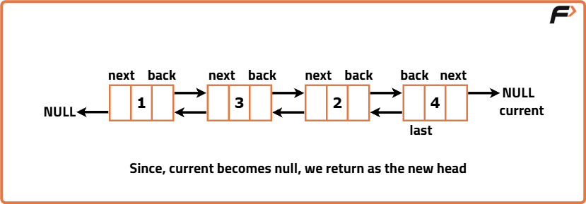
Code
#include <bits/stdc++.h>
using namespace std;
// Class representing a Node in a doubly linked list
class Node {
public:
// To store value of the node
int data;
// Pointer to the next node
Node* next;
// Pointer to the previous node
Node* back;
// Constructor with data, next, and back references
Node(int data1, Node* next1, Node* back1) {
data = data1;
next = next1;
back = back1;
}
// Constructor with only data (default next and back to null)
Node(int data1) {
data = data1;
next = nullptr;
back = nullptr;
}
};
// Function to convert an array into a doubly linked list
Node* convertArr2DLL(vector<int> arr) {
// Create the head node using first array element
Node* head = new Node(arr[0]);
// Maintain a reference to the last node inserted (previous node)
Node* prev = head;
// Loop through the remaining array and link nodes
for (int i = 1; i < arr.size(); i++) {
// Create a new node with current array element
// Set its back to prev
Node* temp = new Node(arr[i], nullptr, prev);
// Link previous node's next to current node
prev->next = temp;
// Update prev to current node
prev = temp;
}
// Return the head of the DLL
return head;
}
// Function to print the doubly linked list
void print(Node* head) {
// Traverse from head to end and print each node's data
while (head != nullptr) {
cout << head->data << " ";
head = head->next;
}
cout << endl;
}
// Function to reverse the doubly linked list in-place
Node* reverseDLL(Node* head) {
// If list is empty or has one node, nothing to reverse
if (head == nullptr || head->next == nullptr) return head;
// Pointer to track the current node
Node* curr = head;
// Traverse the DLL
while (curr != nullptr) {
// Swap next and back pointers of current node
Node* temp = curr->next;
curr->next = curr->back;
curr->back = temp;
// Move to the next node in original order
head = curr;
curr = temp;
}
// Return new head after full reversal
return head;
}
// Driver code
int main() {
// Sample input array
vector<int> arr = {10, 20, 30, 40};
// Convert array to DLL
Node* head = convertArr2DLL(arr);
// Reverse the DLL
head = reverseDLL(head);
// Print the reversed DLL
print(head);
return 0;
}
import java.util.*;
// Node class representing a doubly linked list node
class Node {
int data;
Node next;
Node back;
// Constructor to initialize data only
Node(int data) {
this.data = data;
this.next = null;
this.back = null;
}
// Constructor to initialize data, next, and back
Node(int data, Node next, Node back) {
this.data = data;
this.next = next;
this.back = back;
}
}
// Solution class that contains core logic
class Solution {
// Function to convert an array into a doubly linked list
public Node convertArr2DLL(int[] arr) {
// Creating the head of the DLL using the first array element
Node head = new Node(arr[0]);
// Initializing previous pointer to head
Node prev = head;
// Loop through rest of the array to construct DLL
for (int i = 1; i < arr.length; i++) {
// Create new node with current value, null next, and prev back pointer
Node temp = new Node(arr[i], null, prev);
// Connect previous node's next to this new node
prev.next = temp;
// Move prev to this new node
prev = temp;
}
// Return the head of the constructed DLL
return head;
}
// Function to reverse the doubly linked list
public Node reverseDLL(Node head) {
// Pointer to traverse the list
Node current = head;
// Variable to eventually store new head after reversal
Node last = null;
// Traverse the entire list
while (current != null) {
// Swap next and back pointers of current node
Node temp = current.next;
current.next = current.back;
current.back = temp;
// Move last pointer to current (this will become new head)
last = current;
// Move to next node (originally current.next but now is back due to swap)
current = temp;
}
// Return the new head (was the last node in original list)
return last;
}
// Function to print the DLL from head to end
public void printDLL(Node head) {
// Traverse till end
while (head != null) {
System.out.print(head.data + " ");
head = head.next;
}
System.out.println();
}
}
// driver class
public class Main {
public static void main(String[] args) {
// Create an instance of Solution class
Solution sol = new Solution();
// Sample array input
int[] arr = {1, 2, 3, 4, 5};
// Convert array to DLL
Node head = sol.convertArr2DLL(arr);
// Print the original DLL
System.out.print("Original DLL: ");
sol.printDLL(head);
// Reverse the DLL
Node reversed = sol.reverseDLL(head);
// Print the reversed DLL
System.out.print("Reversed DLL: ");
sol.printDLL(reversed);
}
}
# Class to represent a Node of a doubly linked list
class Node:
def __init__(self, data):
# Initialize the data
self.data = data
# Pointer to the next node
self.next = None
# Pointer to the previous node
self.prev = None
# Function to convert a list into a doubly linked list
def convert_list_to_dll(arr):
# Create the head node from the first element
head = Node(arr[0])
# Maintain a previous pointer to link backwards
prev = head
# Loop through the rest of the elements
for i in range(1, len(arr)):
# Create a new node with previous pointer set to 'prev'
new_node = Node(arr[i])
new_node.prev = prev
# Link previous node's next to this node
prev.next = new_node
# Move prev forward
prev = new_node
# Return the head of the list
return head
# Function to reverse the doubly linked list
def reverse_dll(head):
# Initialize a temporary pointer to traverse the list
temp = None
# Start from the head
current = head
# Traverse till the end of the list
while current is not None:
# Swap the next and prev pointers
temp = current.prev
current.prev = current.next
current.next = temp
# Move to the next node in original list, which is prev now
current = current.prev
# After loop, temp will be pointing to the last node’s prev
# So, adjust head to the new head of the reversed list
if temp is not None:
head = temp.prev
# Return new head
return head
# Function to print the doubly linked list
def print_dll(head):
# Traverse and print each node's data
while head is not None:
print(head.data, end=" ")
head = head.next
print()
# Driver code
if __name__ == "__main__":
arr = [10, 20, 30, 40, 50]
head = convert_list_to_dll(arr)
print("Original DLL:")
print_dll(head)
head = reverse_dll(head)
print("Reversed DLL:")
print_dll(head)
// Class to represent a node in doubly linked list
class Node {
constructor(data) {
// Initialize data
this.data = data;
// Pointer to the next node
this.next = null;
// Pointer to the previous node
this.prev = null;
}
}
// Function to convert an array into a doubly linked list
function convertArrayToDLL(arr) {
// Create the head node from the first array element
let head = new Node(arr[0]);
// Keep track of previous node to link properly
let prev = head;
// Loop through the rest of the array
for (let i = 1; i < arr.length; i++) {
// Create a new node
let newNode = new Node(arr[i]);
// Set the previous pointer of new node
newNode.prev = prev;
// Link previous node's next to current
prev.next = newNode;
// Move prev pointer forward
prev = newNode;
}
// Return the head of the DLL
return head;
}
// Function to reverse the doubly linked list
function reverseDLL(head) {
// Initialize temp to help with swapping
let temp = null;
// Start from the head
let current = head;
// Traverse the list until current becomes null
while (current !== null) {
// Swap the prev and next pointers
temp = current.prev;
current.prev = current.next;
current.next = temp;
// Move current to the next node in original list (now prev)
current = current.prev;
}
// After loop, temp will be pointing to the new tail
// Set head to the last valid node
if (temp !== null) {
head = temp.prev;
}
// Return the new head
return head;
}
// Function to print the doubly linked list
function printDLL(head) {
// Traverse and print all nodes
while (head !== null) {
process.stdout.write(head.data + " ");
head = head.next;
}
console.log();
}
// Driver code
let arr = [10, 20, 30, 40, 50];
let head = convertArrayToDLL(arr);
console.log("Original DLL:");
printDLL(head);
head = reverseDLL(head);
console.log("Reversed DLL:");
printDLL(head);
Complexity Analysis
Time Complexity : O(N) We only have to traverse the doubly linked list once, hence our time complexity is O(N).
Space Complexity : O(1), as the reversal is done in place.